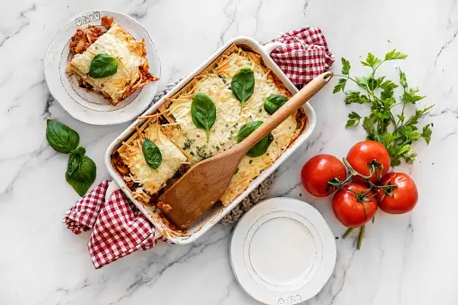

deciduous classic Italian Lasagna

Lasagna is a classic Italian dish with layers of pasta
and cheese, baked until bubbly and golden. Perfect for any
occasion, it's a comforting and versatile meal.
Ingredients:
- 12 lasagna noodles
- 1 pound ground beef
- 2 cups ricotta cheese
- 2 cups mozzarella cheese, shredded
- 1/2 cup grated Parmesan cheese
- 2 cups marinara sauce
- 1 egg
- 2 cloves garlic, minced
- 1 small onion, chopped
- 2 tablespoons olive oil
- 1 teaspoon dried oregano
- 1 teaspoon dried basil
- Salt and pepper to taste
Steps:
- Preheat the oven to 375°F (190°C).
- Cook the lasagna noodles according to the package instructions. Drain and set aside.
- In a large skillet, heat the olive oil over medium heat. Add the chopped onion and minced garlic, and cook until the onion is translucent.
- Add the ground beef to the skillet and cook until browned. Drain any excess fat.
- Stir in the marinara sauce, dried oregano, and dried basil. Season with salt and pepper to taste. Simmer for 10 minutes.
- In a medium bowl, combine the ricotta cheese, egg, and 1/4 cup of grated Parmesan cheese.
- Spread a thin layer of the meat sauce on the bottom of a 9x13 inch baking dish.
- Place a layer of lasagna noodles over the meat sauce.
- Spread half of the ricotta cheese mixture over the noodles.
- Sprinkle 1 cup of shredded mozzarella cheese over the ricotta layer.
- Repeat the layers: meat sauce, noodles, ricotta cheese mixture, and mozzarella cheese.
- Top with a final layer of noodles and the remaining meat sauce. Sprinkle the remaining mozzarella cheese and Parmesan cheese on top.
- Cover the baking dish with aluminum foil and bake in the preheated oven for 25 minutes.
- Remove the foil and bake for an additional 25 minutes, or until the cheese is melted and bubbly.